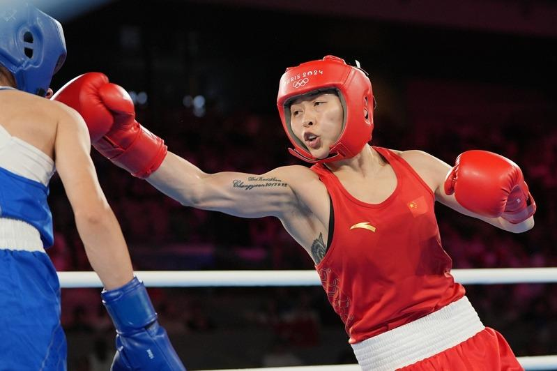
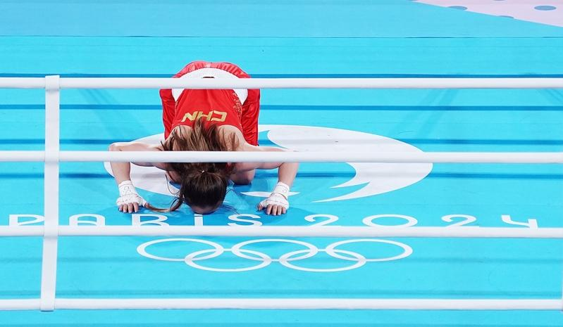
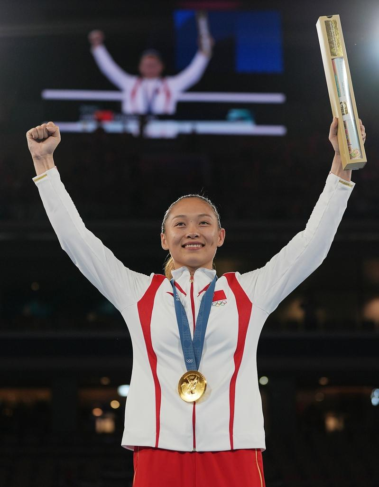

8日在法国巴黎罗兰加洛斯体育场内，巴黎奥运会拳击女子54公斤级决赛中，中国选手常园战胜土耳其选手哈蒂斯·阿克巴斯，为中国女子拳击拿到奥运史上的首枚金牌，实现了历史性突破。
上一届东京奥运会是常园首次亮相奥运赛场，最终止步八强赛稍显遗憾，常园个人社交媒体的置顶作品一直是「带着遗憾离开奥运的赛场」的文案。这仿佛为常园在巴黎奥运会的圆梦埋下了伏笔。
在本届奥运会上，八强赛中常园遇上了一号种子选手、保加利亚名将彼得洛娃。在三年前的东京奥运会上，常园就是在对战彼得洛娃时遗憾出局。好在常园相比于三年前已然精进不少，以4:1击败对手挺进半决赛。半决赛前，常园曾自我鼓励：「豁出去了，反正进入半决赛就有奖牌了，我争取给它换换颜色。」
半决赛中，常园遇到的也是老对手——朝鲜选手方哲美。在2023杭州亚运会上，常园曾以2:3不敌对手留下遗憾。这一次常园复刻了上一次的比分，以3:2淘汰对手，强势挺进决赛。
决赛中，面对土耳其小将哈蒂斯·阿克巴斯，常园展现出经验方面的优势。她的闪躲动作非常巧妙和精准，在比赛前段大量消耗了对手体能，后段以绝对优势拿下比赛。终场时刻，常园挥动拳头、亲吻拳台的一幕令人动容。

赛后接受采访时，常园说在过去三年的备战里，自己的心态发生了很多变化，不像从前那样情绪化。经历这样的过程后，收获的不仅是成绩，也让其更深入地认识自己。
赛后发布会上，常园还提到了自己对于女性力量的理解，她说越来越多的女孩喜欢拳击，开始练习拳击了。拳击一方面能给很多人带来减脂的外在效果。另一方面，也能给人带来自信、勇气。
「从东京奥运会的遗憾到巴黎奥运会的夺金，能让罗兰加洛斯体育场因自己升起国旗非常激动，为了今天最后几分钟，我用了15年时间。」常园这样总结自己的奥运之旅。
